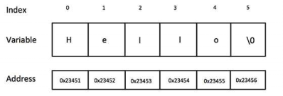

# Strings
Strings in C are an array of characters terminated by a null character -
'\0' - to signify the end of the string.
## Declare & Intialise
// POINTER TO STRING - can only be read
char *name = "John Smith";
// CHAR ARRAY - can be manipulated
// [] - empty brackets tell the compiler to calculate the size automatically
char name[] = "John Smith";
// [11] - specify a string length of 11. need +1 for added null byte
char name[11] = "John Smith";
In memory a string will look like this:
char greeting[] = "Hello";## String length
strlen()Returns length of string as
intchar *name = "Bob";
int name_length = strlen(name);
## Compare strings
strcmp is unsafe (don't know why).
Use
strncmp.
For case-insensitive string comparison - use
strncasecmp.
or
_stricmp on Windows.
http://man7.org/linux/man-pages/man3/strcmp.3.htmlReturns 0 if equal.
char *name = "John";
if (strncmp(name, "John") == 0)
{
printf("Hello john! \n");
}
## Find substring in string
strstr -
http://man7.org/linux/man-pages/man3/strstr.3.htmlReturns pointer to start of substring, or NULL if not found.
char *name = "Tim 'timmy' Toucan";
if (strstr("timmy", name) != NULL)
{
printf("Found timmy! \n");
}
## Concatenate strings
strncat - appends N characters to string.
Returns a pointer to the resulting string destination.
http://man7.org/linux/man-pages/man3/strcat.3.html#RETURN_VALUEchar string1[] = "Hello";
char string2[] = "world";
// append string2 to string1
strncat(string1, string2, strlen(string2));
printf("string1: %s \n", string1);
## Loop through char array of strings
Some functions like
GetLogicalDriveStrings return a large buffer of strings separated by NULL bytes.
They can be a pain to loop through.
/*
drives_buf contains an array of char strings, like this: (it's "C:\" and "D:\")
43 3a 5c 00 44 3a 5c 00 00
*/
char* drive = drives_buf;
while (*drive != 0)
{
printf("%s \n", drive);
drive += strlen(drive) + 1;
}